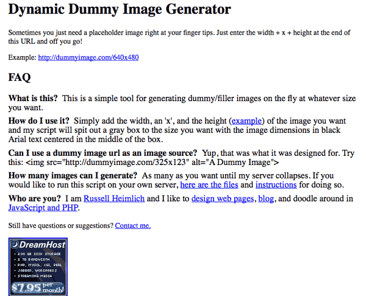
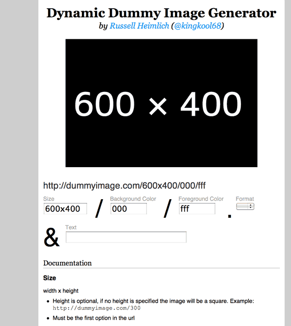
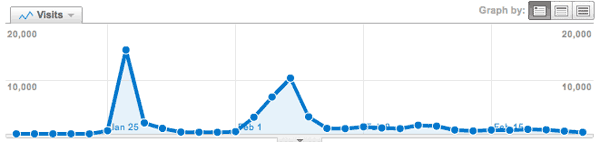

As 2010 is wrapping up, I decided to take some time to chronicle the history of one of my biggest web development milestones of the year.
In December of 2006, I started my first real job out of college as a frontend developer at USNews.com. My first big project was to turn a new site design from a collection of Photoshop documents into functioning HTML and CSS code. I had to slice up dummy images to put into the layouts. As the redesign process wore on, sizes of elements changed ever so slightly meaning I needed to make new images with each iteration. I had wished there was a way to conjure up these placeholder images on the fly. I ended up tucking that idea away in the back of mind.
For whatever reason I decided to purchase the domain dummyimage.com on the 20th of July, 2007. I can’t remember if I had some early prototype version working by then but I had made up my mind that I was going to do something with this idea. Like most tinkering web devs, I have a stable of domains for other ideas sitting around until one day when I can get around to them. Dummyimage.com was not like those other ideas.
Fast forward to August 11th, 2007, when I attended my first Bar Camp in Washington DC. I had mentioned my dummy image idea to Jason Garber and Jeremy Carbaugh in passing. They said it was a cool idea and should be pretty easy to do.
From then on, I was determined to figure out how to make my idea work. Aside from toying around in WordPress (which resulted in this blog you’re reading now) I had zero experience with PHP. I was quite comfortable with JavaScript however and found PHP easy to pickup. On August 26th, 2007, I had launched my first version of dummyimage.com.

The first release was as simple as could be. The only thing you could change were the dimensions of the images. Everything was a gray background with the size of the image in centered black Arial text. I released the source code via a no-frills zip archive for anyone to take it and do what they wanted. I didn’t even bother with a design for the site itself thinking only a handful of people would even see it.
Around December of 2009 I began toying with some new capabilities for dummyimage.com. The biggest request I got was for the ability to change the colors of the background and text. I didn’t really see the point so I sat around on the new changes. Then on January 25th, 2010. My friend Charlie Park (whom I met at the first DC Bar Camp in 2007) tweeted out a link mentioning dummyimage.com My site made its way through the developer community like wildfire thanks to HackerNews, and Twitter. Suddenly I felt the need to get working on new features and a redesign for dummyimage.com based on the feedback that was pouring in.
On March 10th, 2010, (Chuck Norris’ Birthday & International Day of Awesomeness) I launched version 2 of dummyimage.com.This added color options, the ability to customize the text displayed on the image, and a simple form on the homepage to make generating custom dummy images easier. I switched the typeface from Arial to a completely free and open font called M+. I also released the source code under the liberal MIT license based on feedback I had gotten.
I wanted the new dummyimage.com look to be a little rebellious. Most sites are centered align in relation to the browser. I deliberately made the dummyimage.com homepage align to the right. You can really notice this the larger your monitor’s resolution is. One person even sent me an e-mail providing a CSS tweak to make it center align. He thought I had made a mistake.

Since other people were doing other things with the dummyimage idea like making plugins for text editors and different platforms, I decided to curate those and link to them from dummyimage.com I was happy to see my idea taking hold with the community, even spreading to non-english areas of the web. I guess the simplicity of my little project transcends language barriers.
Dummyimage.com gets about 10,000 unique visits to it’s one and only page. It’s single largest day of traffic was January 26th, 2010, with 15,766 unique visits. Of course most of the traffic comes from people embedding images into their pages. I get about 5.8 million requests (pageviews essentially) for a total of 11.4 gigabytes of bandwidth in a typical month. I have gigs and gigs of server logs to analyze if I really wanted specifics but I leave dummyimage.com’s server stats open for anyone to take a look at.

With the redesign I aimed to make a little extra change by placing 3 ad units to the left. They probably bring in a couple dollars a month via Amazon.com referrals. I don’t really pay attention to that stuff.
So all in all I’m happy with where dummyimage.com has come and it makes for a great milestone in 2010. Hopefully in 2011 I can manage to launch even bigger projects I have in mind.